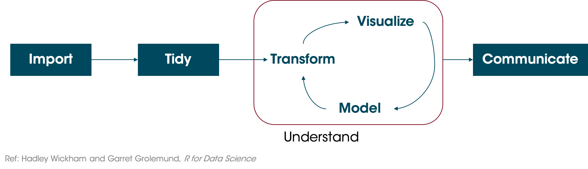

3 Exploring and Communicating with Data

3.1 The Data Science Cycle
Wickham and Grolemund propose the Data Science Cycle as one way to organize your process. After importing your data and tidying it (cleaning and arranging it for analysis), you explore and gain understanding. Finally, you communicate your results.

3.2 Exploratory vs. Explanatory Data Analysis
In Exploratory Data Analysis (EDA), you don’t necessarily know what you’re looking for. You might have an idea that there’s a problem or heterogeneity (something different). Exploratory data analysis takes place in the iterative loop in the Data Science Cycle above.
EDA is not formal, rigid or defined. Start with questions about your data, and then look at them. Use a combination of transformations (e.g. looking at the mean or median), visualizations (e.g. bar charts, histograms, etc), and models (e.g. linear regression).
You will often have some initial questions and hypotheses to go on, like “Are sales different in different regions?” or “Do donors give more on Mondays?” or “Do students perform better if they eat a snack?”
"[Exploratory Data Analysis] is a state of mind. During the initial phases of EDA you should feel free to investigate every idea that occurs to you. Some of these ideas will pan out, and some will be dead ends. (Hadley Wickham and Garrett Grolemund, R for Data Science, pg 81)
Dashboards are often an important tool to help non-data people who are domain experts (e.g. doctors, sales managers) perform their own EDA.
After exploratory data analysis, you will often move to the last step of the Data Science Cycle, communicating. This is where explanatory analysis, comes in.
“[Explanatory analysis is when] you have something specific you want to communicate to somebody specific” (Cole Nussbaumer Knaflic, Storytelling with Data Talk at Google)
Rather than letting people get lost in the data or just presenting a big table, we want to say something very specific using the data.
3.3 Storytelling with Data
3.3.1 Step 1: Focus Attention
Cole Nussbaumer Knaflic, author of Storytelling with Data, argues that there are two keys to effectively communicating with data. First, is to focus attention using pre-attentive attributes and effective design. Rather than just putting all the information on the page, draw attention to specific parts strategically to cue your readers.
Thinking about our hotel booking data, suppose we want to compare the average daily rate across marget segments. Below, see two graphs.

They’re very similar. The top graph isn’t bad, but the bottom one cues us in immediately to look at the Direct Sales Market Segment. Even though I haven’t told you anything more, you’re already focused on Direct Sales. Maybe you even started comparing it to the others. In the top one, maybe your brain started comparing Aviation to Complementary, and Corporate to Groups. But with the bottom one, I bet the primary comparisons were X vs Direct. We’ll talk more about preattentive attributes in the next section, but this is an example of using color.
3.3.2 Step 2: Tell a Story
We’re going to focus attention, but on what and for what purpose? To tell a story.